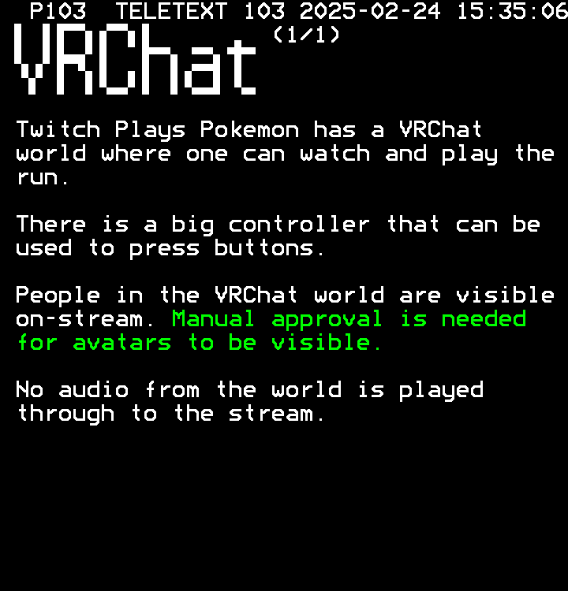

P103 TELETEXT 103 2025-03-10 19:01:26 (1/1) Twitch Plays Pokemon has a VRChat world where one can watch and play the run. There is a big controller that can be used to press buttons. People in the VRChat world are visible on-stream. Manual approval is needed for avatars to be visible. No audio from the world is played through to the stream.